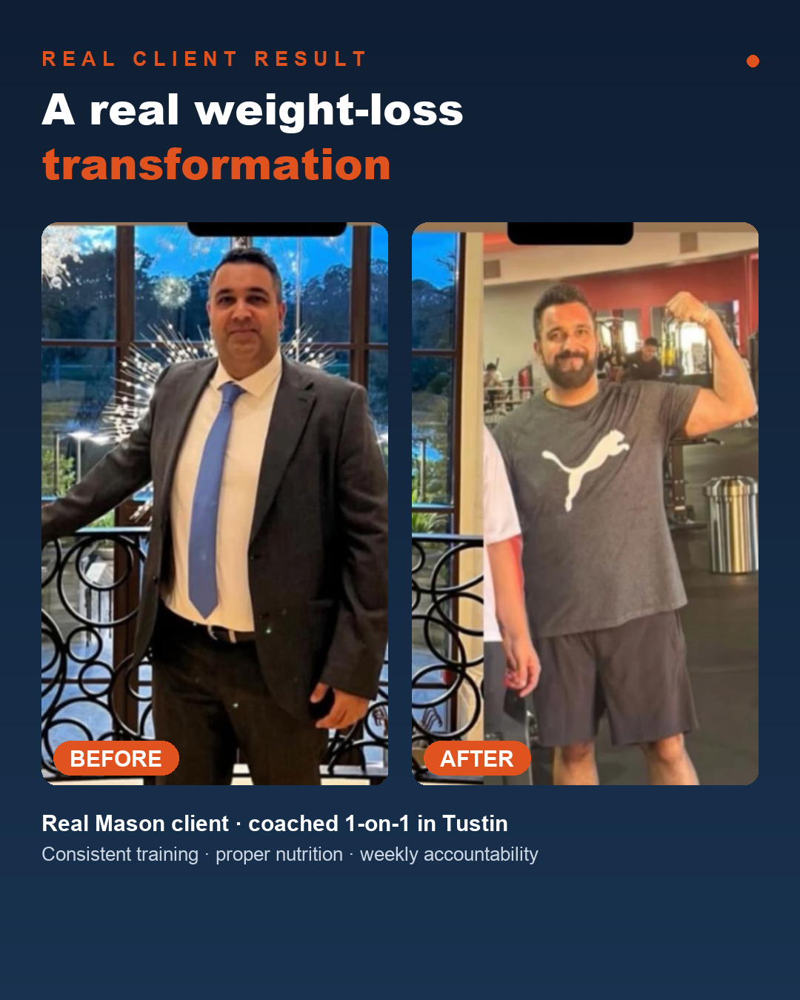
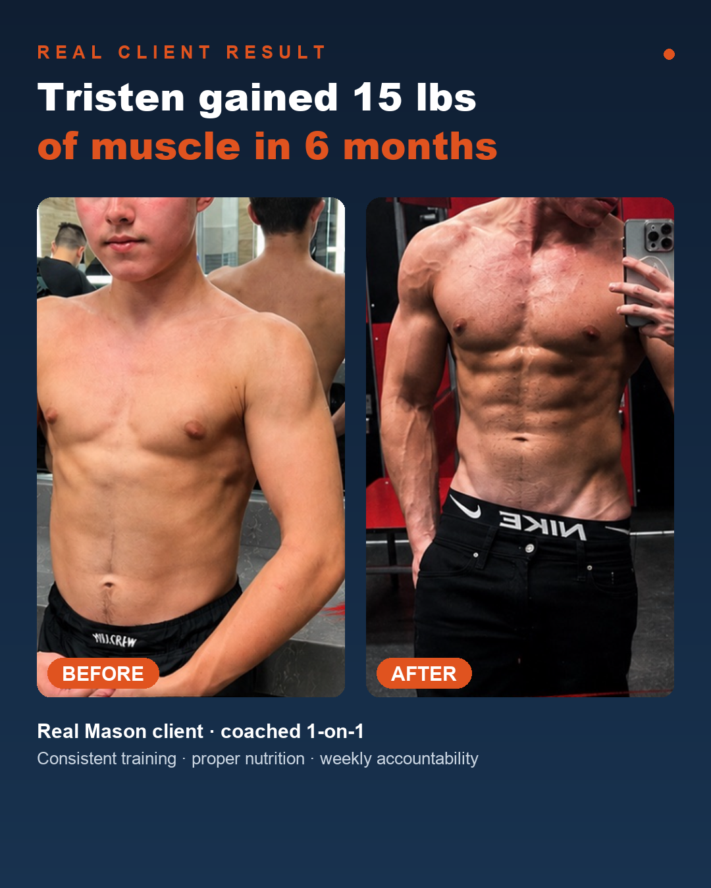
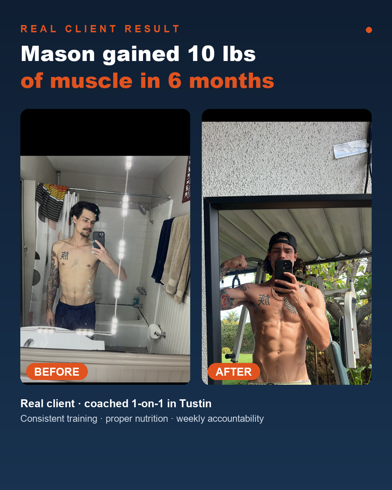
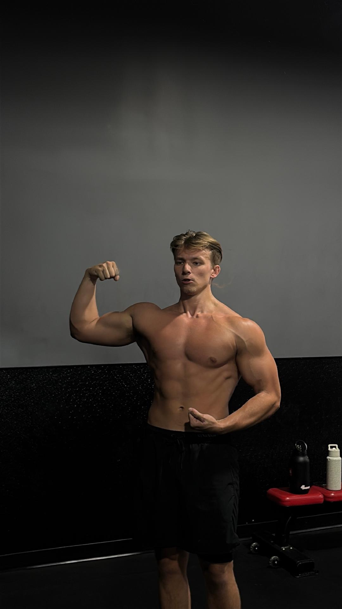

He notices the moment your week slips and pulls you back — before one bad week becomes months off.
1-on-1 personal training · Tustin, Orange County
A coach who treats you like a person — not a number.
Private 1-on-1 training for busy Orange County men who are done restarting. Mason actually listens, builds the plan around your real life, and stays in your corner every single week.
Now accepting a few new 1-on-1 clients this month
Free assessment — limited spots available, first come, first served. An honest look at where you've been stuck and whether Mason is the right coach to fix it.
Not just during your hour — a quick check-in that keeps you on track all week.
Fits real life — work, family, and travel, not a fantasy calendar.
Certified, professional coaching — not a bro with a clipboard.
Your own coach for the full hour — never a crowded gym floor.
Weight loss and lean muscle from consistent, attentive coaching.
Low-pressure first step to clarify fit and your next steps.
Why men quit their last trainer
Most trainers treat you like a number. That's the real reason it never stuck.
Be honest — your last trainer was probably on their phone half the session, handed you the same plan as everyone else, and never really listened. When you don't feel seen, you stop showing up, and then you blame your own willpower. It was never your willpower.
Treated like a number, not a person.
Trainers who don't listen, don't remember your life, and run you through a generic routine. You felt like a transaction — so it never felt worth showing up for.
No one actually in your corner.
When the week falls apart, nobody notices. Real accountability is someone who catches the slip early and pulls you back — before a bad week becomes another six months off.
A plan built for someone else's life.
Cookie-cutter programs ignore your job, your family, your travel. If the plan doesn't fit your real week, it becomes one more thing to fail at.
Real client results
Real men. Real change. From coaching that actually pays attention.
These are real Mason clients, coached 1-on-1. The driver was never a harder program — it was consistency, attention, and someone who stayed in their corner week after week.



In their words
"I've worked with a few trainers before, but none come close to the professionalism, knowledge, and motivation Mason brings. Every session is well-planned and tailored to my goals. Worth every minute."
"From day one, he made sure I felt completely comfortable — something that really matters when you're starting again. If you want a trainer who's supportive and committed to helping you grow, Mason is the one."
"He understands the importance of proper form, he's patient, and he's a great motivator. He wants you to succeed, not fail. Choose Mason with total confidence."
Real client wording, used with permission.
Ready to start?
Start with one session — just $49.
Private, 1-on-1 coaching in Tustin with a NASM-certified coach who actually checks in on you. Come see what it feels like — no package, no commitment.
$49
Your first 1-on-1 training session
One full private session with Mason — a real workout, real coaching, and an honest read on where to start.
Book my first sessionReal 1-on-1 accountability: once your session is booked, you show up — and Mason checks in to keep you on track. Limited spots each month, first come, first served. Not ready yet? Book a free assessment above.

About Mason Image
Use Mason's gym image to support the credibility section.
About Mason
You're a person here — not a client number.
- NASM-Certified Personal Trainer
- Private 1-on-1 studio in Tustin
- 50+ men coached
Mason Davis keeps his client list small on purpose. When you train with him, you should feel like the only person he's thinking about for that hour — because you are. He learns your goals, your history, and the realities of your week, and he actually remembers them.
That's the whole difference: most trainers run you through a routine. Mason coaches you — he adjusts as your life changes and won't let your standards quietly slip.
- He tells you the truth — even when it's not what you want to hear.
- Accountability that survives busy weeks, travel, and real life.
- Your plan flexes when life changes, instead of guilt-tripping you.
- Genuine investment in your result, not just your sessions.
A fit if you want
This is likely a strong fit if you want:
- A coach who pays attention to you, not the clock.
- Someone who catches you before you fall off, not weeks later.
- A plan that adapts when work and family don't cooperate.
- Weight loss or lean muscle that finally sticks.
Not the right fit
This will be a poor fit if you want:
- A trainer who's on their phone and just counts reps.
- Extreme dieting, punishment, or performative motivation.
- A coach who says yes to everything and challenges nothing.
- Quick fixes without structure, patience, or honesty.
FAQ
Questions men usually ask before reaching out.
Will I actually get Mason's attention, or feel like a number?
Attention is the whole point. Mason keeps his client list small on purpose so every session is fully focused on you — your plan, your week, your progress.
I already know how to train. Why would I need a coach?
Because the issue is rarely knowledge. The value is having someone who keeps you accountable, adapts the plan to your real life, and catches old patterns before they creep back in.
What if my schedule changes from week to week?
That's exactly why a real coach matters. Your plan adapts to your actual week without letting your standards disappear.
What if I've started and stopped many times before?
That's one of the clearest signs the missing piece was attention and accountability — not your willpower. Repetition doesn't mean you're incapable; it usually means the system was wrong.
What does the assessment cost?
The assessment is free. It's meant to create clarity before any commitment gets discussed.
Will this feel like a sales call?
No. The point is to get clear on fit and what would actually help. If it's not the right fit, Mason will tell you honestly.
Final step
You deserve a coach who actually shows up for you.
If you're tired of being treated like a number, take the next step while the intention is still clear.
Book Your Free Assessment